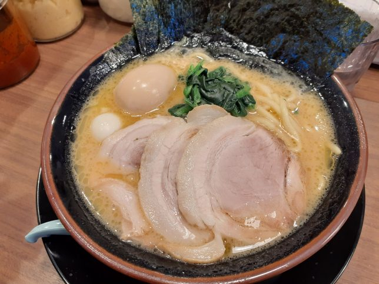

個人的大分県
このサイトについて
このサイトは、筆者が実際に訪れた大分県内のラーメン店の中から、
特におすすめしたい店舗をランキング形式で紹介しています。
味・雰囲気・コスパなど独自の観点で評価しており、総合評価で順位付けしています。
気になったお店があれば是非足を運んでみてください。
TOP5
第一位：横浜家系ラーメン 福まし家
おすすめメニュー：塩MAXラーメン ¥980
所在地：大分県大分市中央町2-6-14
営業時間：11:00～22:00
定休日：水曜日
コメント：横浜発祥のラーメン。家系のためだけに作られた中太麺を使用。低加水で練り上げ、長時間熟成させることで家系ならではの中毒性のある食感を生む。スープは厳選した豚骨と鶏ガラで炊きだした豚骨。臭みはなく、とろみのあるスープは家系ならでは。家系のスープを引き立てるかえしは二種類。
第二位：嫁の中華そば

おすすめメニュー：嫁の推しメン ¥1100
所在地：大分県大分市中鶴崎1-1-30
営業時間：11:00～15:15
定休日：木曜日
コメント：東北喜多方の平打ちちぢれ麺を使用。地元産の甘口醤油に鶏と魚介で出汁をとったダブルスープを混ぜて使用。
第三位：らうめん 点法輪
おすすめメニュー：Sin佐伯ラーメン ¥650
所在地：大分県佐伯市鶴岡西町2-233
営業時間：11:00～15:00、17:00～21:00
定休日：木曜日
コメント：イタリアン出身の店主による佐伯豚骨ラーメン。数種の豚骨を使い分け、ニンニク風味など個性が光るスープ構成。
第四位：丸優ラーメン
おすすめメニュー：丸優特製ラーメン ¥1250
所在地：大分県大分市元町3-3
営業時間：11:00～14:00
定休日：月曜日、金曜日
コメント：1995年創業の老舗。豚の頭を何時間も炊いて取ったスープは深みとすっきり感を両立している。
第五位：トラの夢
おすすめメニュー：ローストチャーシュー麺 ¥1000
所在地：大分県大分市森633―5
営業時間：11:00～23:00
定休日：水曜日
受賞歴：2015年度食べログ&Yahoo!大分ラーメンランキング1位
コメント：48時間以上煮込む「呼び戻し製法」で濃厚ながら油分が少ない豚骨スープを実現。
1 / 2
次へ →
コメントを書く